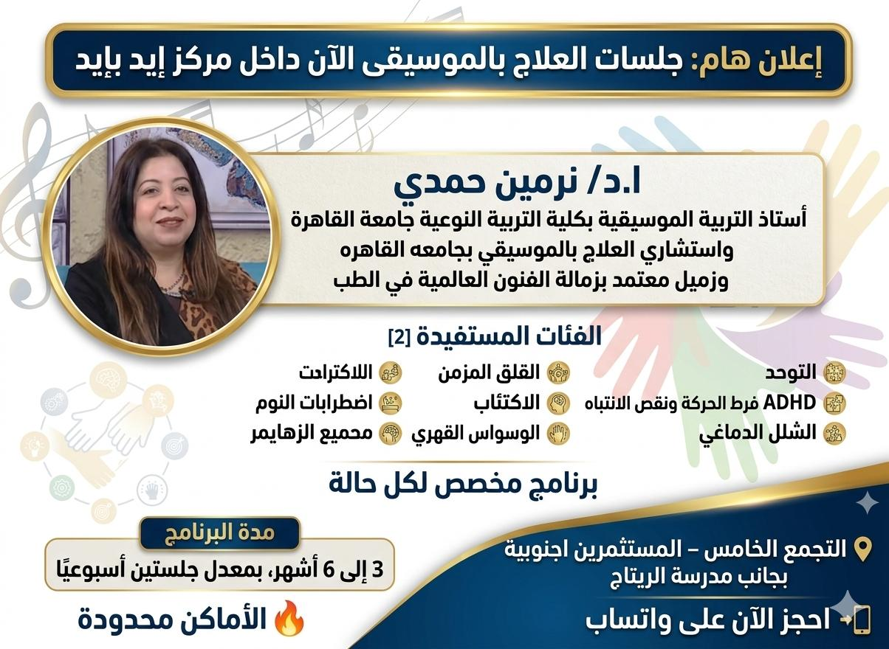
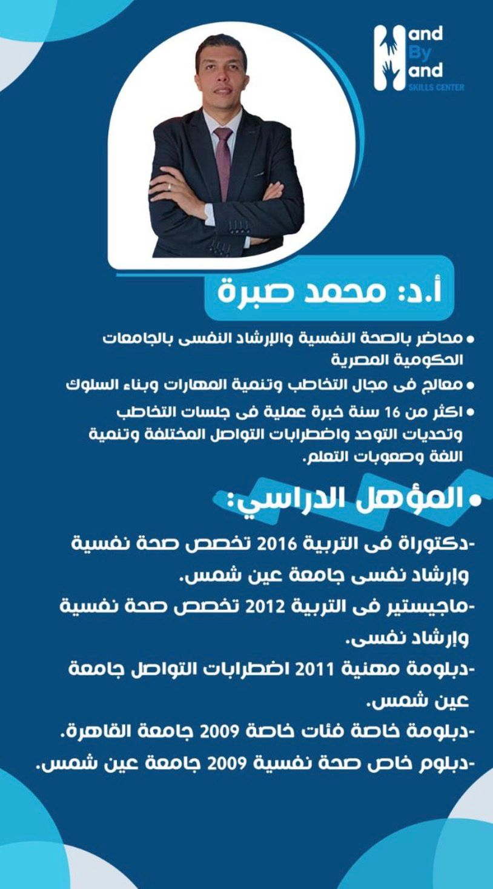
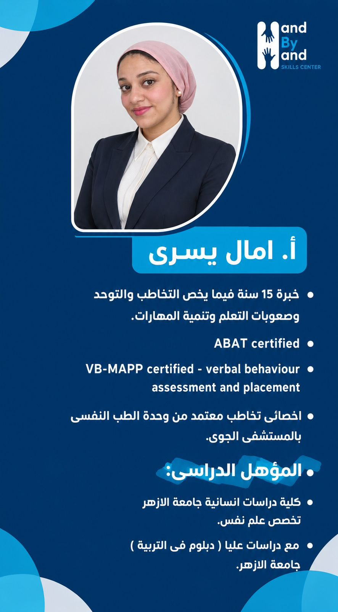
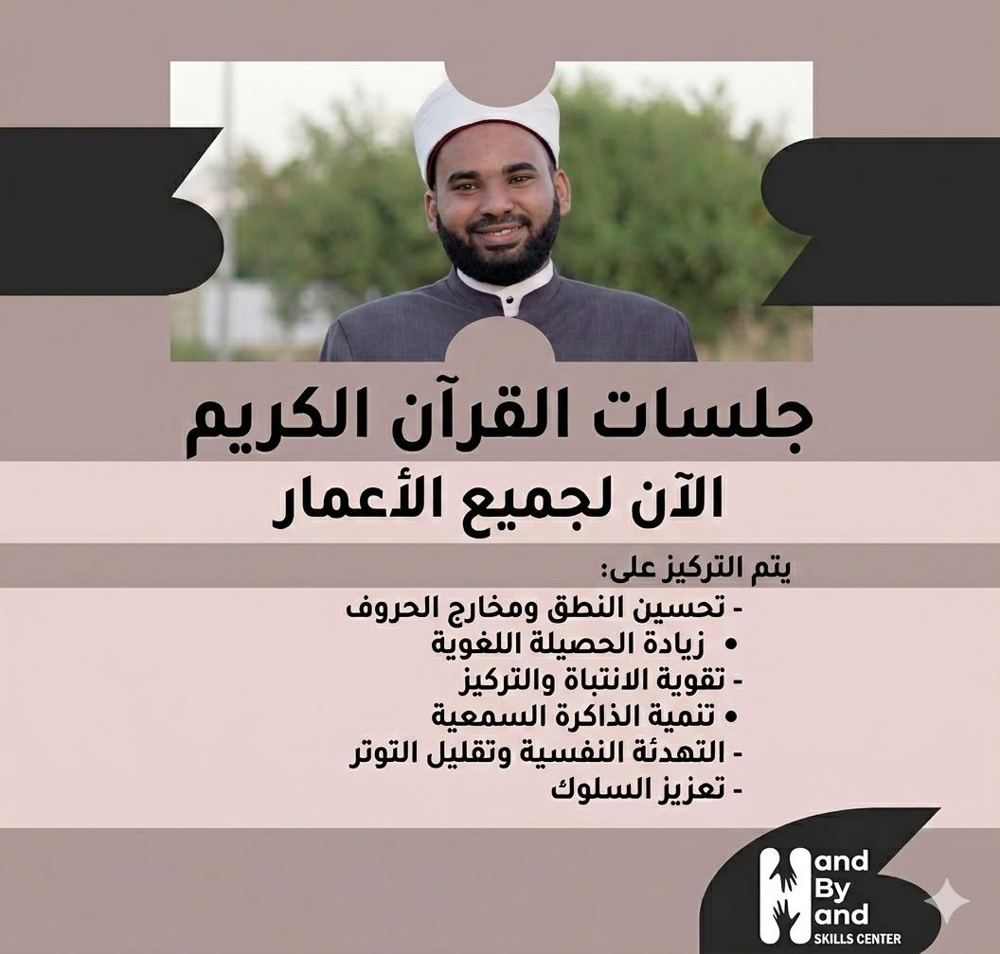

تخاطب وتنمية لغة
عمل على النطق والفهم والتعبير، وعلى وسائل تواصل بديلة عند الحاجة.
جارٍ تحميل الموقع…
ثماني خدمات، تُبنى منها خطة الطفل بعد جلسة التقييم
تأخر كلام · تشتت انتباه · صعوبات تعلم · تحديات سلوكية · تواصل اجتماعي · احتياجات حسية أو حركية
مش مطلوب منك تعرف اسم الخدمة. احكِ لنا ما يقلقك، ونساعدك تحدد البداية المناسبة.
عمل على النطق والفهم والتعبير، وعلى وسائل تواصل بديلة عند الحاجة.
مهارات اليد والحركة الدقيقة والاعتماد على النفس في مهام اليوم.
برنامج سلوكي بأهداف محددة وقياس متكرر لما يتغير فعلًا.
مهارات اللعب والانتباه والتنظيم الذاتي والتعامل مع الآخرين.
جلسة أولى نفهم فيها وضع الطفل، ومنها تُكتب الخطة وتُحدد الخدمات.
الإيقاع والصوت كمدخل للانتباه المشترك والتواصل والتنظيم.
أنشطة محسوبة للحس واللمس والتوازن حسب احتياج كل طفل.
قراءة وكتابة وحساب، ودعم موازٍ لما يدرسه الطفل في مدرسته.
أنشطة وبرامج مكملة تُختار حسب احتياج الطفل، إلى جانب خدماتنا الأساسية. ويتوفر مسار منفصل لتدريب الأخصائيين.
جلسات تخاطب بالعربية والإنجليزية والفرنسية لدعم مهارات اللغة والتواصل.
دعم وإرشاد للأسر لمساعدتهم في التعامل مع التحديات السلوكية والتنموية.
جلسات علاج بالموسيقى لدعم التواصل والتركيز وتنمية المهارات الاجتماعية.
برامج متخصصة في تحفيظ القرآن الكريم وتعليم التجويد للأطفال بطرق تفاعلية مناسبة لكل فئة عمرية.
دورات تدريبية وإعداد أخصائيين في مختلف المجالات، أونلاين وحضوري.
برامج فنية وإبداعية لجميع الأطفال لدعم المواهب وتنمية القدرات.
برامج وأنشطة دمج تفاعلية لتنمية المهارات الاجتماعية في بيئة طبيعية وآمنة.
أنشطة حركية متخصصة تساعد في تعزيز الثقة بالنفس والتوازن الحركي والمهارات الاجتماعية.
أربعة قرارات في طريقة عملنا، لا شعارات
لا جلسات جماعية ولا فصول. هذا اختيار وليس ظرفًا: الجلسة كلها لطفل واحد، وهكذا بُني النظام الذي يديرها.
تابع جلسة طفلك مباشرة من بوابتك، بخصوصية واطمئنان. البث أثناء الجلسة فقط، بدون تسجيل أو حفظ أو تنزيل.
لكل طفل أهداف محددة تُقاس على فترات، وتقارير تقدّم يقرأها وليّ الأمر في بوابته.
كل موعد وجلسة وملاحظة وفاتورة في ملف واحد للطفل، لا في دفاتر متفرقة.
خصوصية طفلك أولوية: لا تسجيلات، ولا حفظ أو تنزيل، ولا مشاهدة لاحقة.
أخصائيون في التخاطب والعلاج الوظيفي وتحليل السلوك والتكامل الحسي
نعمل معًا من أجل مستقبل أفضل لأطفالنا

أستاذ التربية الموسيقية والعلاج بالموسيقى
عرض الملف المهني
محاضر في الصحة النفسية والإرشاد النفسي
عرض الملف المهني
أخصائية تخاطب وتنمية مهارات
عرض الملف المهني
جلسات القرآن الكريم لجميع الأعمار
عرض الملف المهنيمكان مخصص لآراء حقيقية، تُنشر بموافقة أصحابها
أول مرة كنت أسمع عن أن الموسيقى تقدر تكون وسيلة علاج. مع د. نرمين شفنا فرق كبير مع ابنتي، تعامل رائع واهتمام واضح بكل تفاصيل الجلسات. شكرًا دكتورة على دعمك وصبرك ومتابعتك المستمرة.
دكتور محمد مفيش كلمة شكر ولا وصف لحضرتك. كنت بتعمل معانا حرفيًا معجزات مع ابني، كنت بتحترمنا وبتتعامل معانا واسم شرف ليا إن كنت من الأيام تلميذة حضرتك. ربنا يبارك فيك وفي كل حاجة بتقدمها لأطفالنا.
أنا بكل صراحة مبسوطة جدًا من تطور ابني، وأهداف البيت اللي بدأ فيها أنا شايفة نتيجتها عندي بالبيت، وحصل ليه تطور بالشهرين دول. شكرًا من قلبي لكل فريق مركز هاند باي هاند.
ثقتكم هي قصتنا
أربع خطوات من أول اتصال حتى أول جلسة
تملأ نموذجًا قصيرًا ببياناتك وبيانات الطفل وما يقلقك. لا يُنشئ الطلب ملفًا للطفل، بل ينتظر مراجعة المركز.
نتصل بك في الوقت الذي تختاره لنسأل عمّا نحتاجه ونحدد موعد التقييم.
جلسة مع الطفل يحضرها وليّ الأمر، نخرج منها بصورة واضحة عن نقاط القوة والاحتياج.
خطة مكتوبة بأهداف محددة وجدول جلسات، تُراجع دوريًا بناءً على القياس لا على الانطباع.
تُحدد الباقة المناسبة بناءً على نتائج جلسة التقييم واحتياج طفلك الفعلي
جلسة متكاملة لفهم نقاط القوة وتحديد الاحتياجات وبناء خطة العلاج المبدئية.
نؤكد نوع التقييم وتكلفته مسبقًا قبل الحجز
اطلب جلسة تقييممثالية للمتابعة الدورية بمعدل جلستين أسبوعيًا لتحقيق تحسن مستقر ومتوازن.
تواصل معنا لمعرفة التفاصيل والخصومات
استفسر عن باقة 8 جلساتمخصصة للحالات التي تحتاج تدخلًا مكثفًا وتسريع وتيرة التطور والتحسن.
تواصل معنا لمعرفة جدول المواعيد المتاحة
استفسر عن باقة 16 جلسةيؤكد المركز الباقات المتاحة، وعدد الجلسات ومدتها وتكلفتها وما تشمله، قبل الحجز.
نعم. كل جلسة لطفل واحد، ولا توجد جلسات جماعية.
لا. البثّ مباشر أثناء الجلسة فقط، ولا يُسجَّل ولا يُحفظ ولا يمكن تنزيله أو مشاهدته لاحقًا.
وليّ أمر الطفل، والأخصائيون المسؤولون عنه، وإدارة المركز في حدود عملها. لكل أسرة خصوصيتها، ولا يمكن لوليّ أمر الاطلاع على بيانات طفل آخر.
يصل الطلب إلى المركز للمراجعة ولا يُنشئ ملفًا للطفل بنفسه. نتصل بك في الوقت الذي اخترته لاستكمال البيانات وتحديد موعد التقييم.
لا. كثير من الأطفال الصغار بلا رقم قومي بعد، والحقل اختياري تمامًا في طلب الالتحاق.
يحدد المركز مدة الجلسة وتكلفتها حسب الخدمة. تواصل معنا للتفاصيل الحالية.
مستقبل أكثر إشراقًا لطفلك يبدأ بخطوة.
نرد خلال ساعات العمل
يُضاف قريبًا
يسهل الوصول إلينا عبر محور محمد نجيب.
بالقرب من كوبري الرحاب والتجمع الخامس.
يمكنك استخدام خرائط Google للوصول بدقة.
سيتم فتح الموقع في تبويب جديد على Google Maps
املأ اطلب تقييم لطفلك، ونتصل بك لتحديد موعد التقييم.